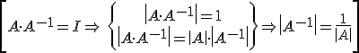
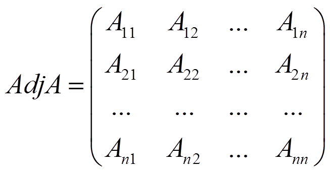
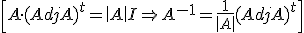
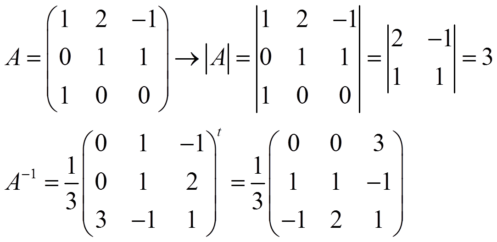
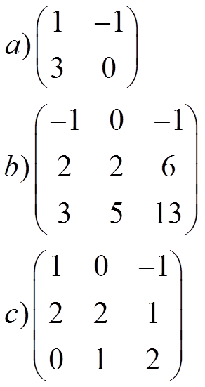
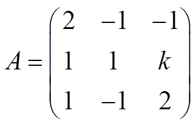
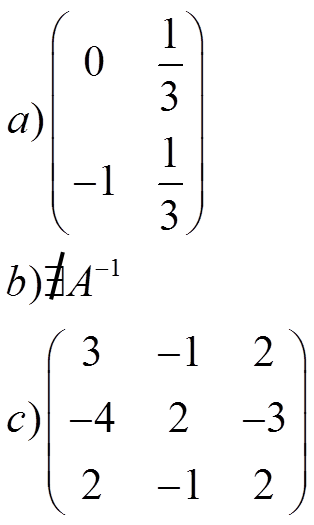
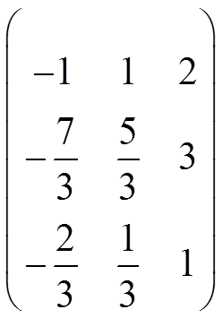

Propiedad fundamental: Si A es invertible→ |A| ≠ 0 entonces, como tenemos que A·A-1 = I

Sea matriz de los adjuntos

entonces

Ejemplo:

Ejercicios
1.- Calcula la inversa de estas matrices:

2.- Encuentra los valores de k que hacen que A sea invertible:

Calcula A-1 si k = -5
Soluciones:
1)

2) k ≠ -8
